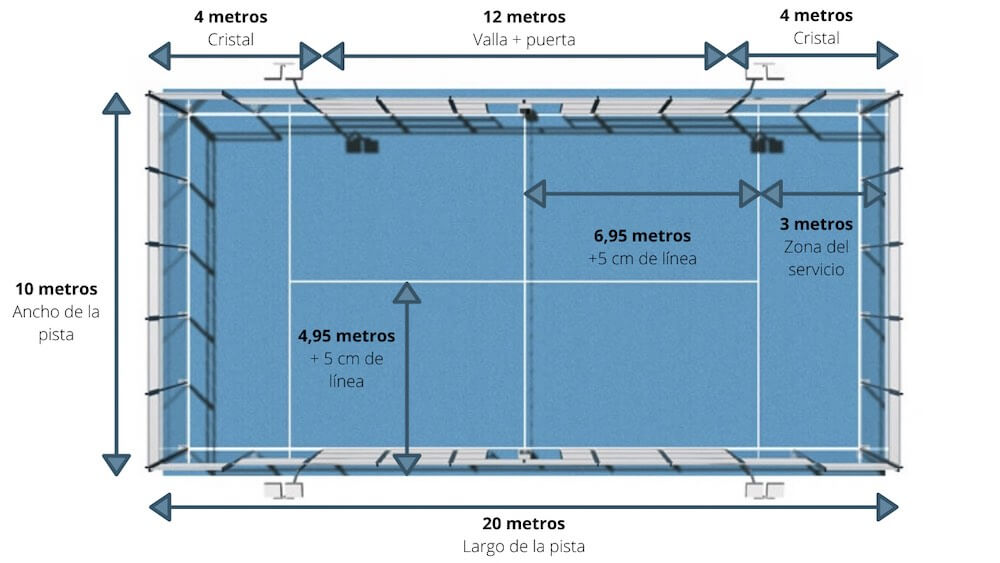

¿Cómo es la cancha?
La cancha de pádel mide 20 metros de largo y 10 metros de ancho, y cuenta con 4 áreas de servicio y una red. Un muro de 3 metros de altura, el cual está unido a otro metro de malla metálica, cierra la parte posterior de la cancha.
La pista está delimitada a lo largo por un muro trasero de 2 metros de altura y una valla de 12 metros de longitud.

Veamos ahora algunas reglas del pádel
- La partida se juega de 2 contra 2 (dobles).Hay algunas canchas para jugar uno contra uno, ¡pero no es tan divertido!
- El servicio: Se permiten 2 pelotas de servicio, el cual se realiza de manera diagonal a la raqueta.
- Se permite un rebote.
- La pelota debe rebotar antes de tocar cualquier parte de la cancha.
- Los puntos se cuentan como en tenis (15-30-40-ventaja, set de 6 juegos)
- Las pelotas de pádel son muy similares a las de tenis son ligeramente más grandes y más lentas.
Con estas reglas básicas puedes empezar a jugar pádel. ¡Lo único que tienes que hacer es tener el mejor equipo posible y disfrutar de este fabuloso deporte!